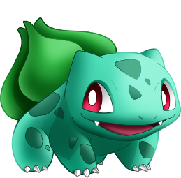
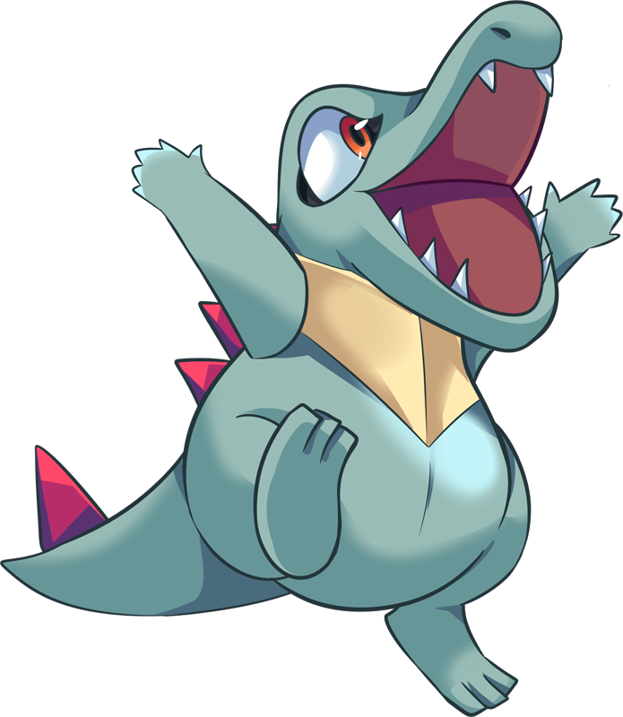
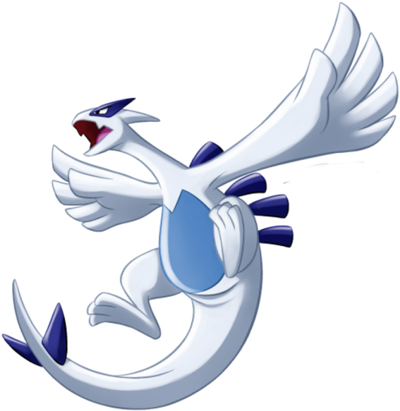

-
Bulbasauro
HP 200
Descrição
Bulbasaur é um Pokémon tipo duplo Planta/Veneno. Ele evolui para Ivysaur começando no nível 16, que evolui para Venusaur começando no nível 32. É um dos três Pokémon iniciantes da região de Kanto, assim com Charmander e Squirtle
-
Pikachu
HP 300

Descrição
Os Pikachus são pequenos roedores de quarenta centímetros e de seis quilogramas, com um corpo redondo, pernas curtas e uma longa cauda, quando macho, a cauda tem um formato de um raio, mas se o Pikachu for fêmea sua cauda ganha um coração na ponta.
-
Totodile
HP 500
Descrição
Totodile possui uma aparência muito semelhante à de um crocodilo — afinal, sendo do tipo água, ele deve se parecer com algum animal aquático —, tendo garras, dentes afiados e uma longa cauda.
-
Charizard
HP 800

Descrição
Geralmente, um Charizard é competitivo. Ele adora a batalha e seu espírito competitivo também é notável, uma vez que nunca vai cuspir fogo em um inimigo mais fraco a menos que provocado ou ordenado. Quando fica muito irritado, as chamas em sua cauda se tornam branco-azuladas.
-
Mewtwo
HP 1200

Descrição
Mewtwo foi criado geneticamente em um laboratório, sendo um clone do misterioso antigo Pokémon Mew. É uma criatura com uma postura humanóide, mas tem algumas características felinas.
-
Lugia
HP 2000
Descrição
Lugia é um Pokémon Lendário tipo Psiquico e Voador. Ao lado de Ho-Oh, é um dos guardiões de Johto. Dizem poder ser visto em noites de tempestade. Após testemunhar guerras terríveis, deixou de acreditar na harmonia pura entre humanos e Pokémon e se isolou de tal forma que sua mera existência é tida por muitos como um mito; o folclore diz que ressurgirá diante de um Treinador com um laço sincero com seus Pokémon.